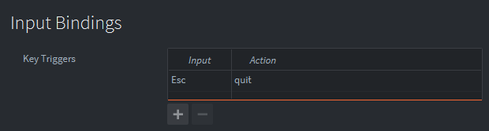

Tutorials for 2D games projects
Spotter | Writing the script to handle the player clicking the mouse somewhere on the picture.
- In the assets panel, right click, 'main' and select, 'New...', 'Script'.
- Name the script, 'player_input'.
- Change the script to handle the player clicking the mouse.
function init(self)
msg.post(".", "acquire_input_focus")
end
function final(self)
msg.post(".", "release_input_focus")
end
function on_input(self, action_id, action)
-- handle mouse click
if action_id == hash("touch") and action.pressed then
local pos = vmath.vector3(action.x, action.y, 0)
-- new cross placed. Collision objects resolve difference found
factory.create("/player_input#target",pos)
end
-- player presses escape
if action_id == hash("quit") then
msg.post("main:/controller","show title screen")
end
end
The input focus is aquired by the script.
If the player presses the left mouse button the position of the mouse is stored in a local variable called 'pos'. The 'action' parameter holds these x and y attributes. We convert this to a vector3 so we can use it to place a target at that position.
The factory (which we will attach to a player_input object in a moment) creates a new target at the mouse position.
While we are here, we will build in an option for the player to press the escape key to quit the level. In the real game we might not need this, but it is a good opportunity to demonstrate how we could close the level1 collection and return to the title collection using the controller we built.
We need to set an input binding for Escape to work.
- In the assets panel, in the 'input' folder, double click, 'game.input_binding'.
- Set the following key trigger:

- Save the changes by pressing CTRL-S or 'File', 'Save All'.
Now we need to put the player_input into the level. Stage 4d >
 Craig'n'Dave | Version 1.3
Craig'n'Dave | Version 1.3